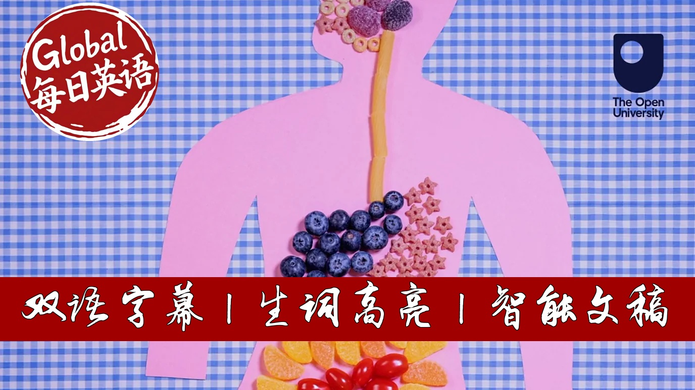

【BBC科普精选：五种出乎意料却非常简单的饮食好习惯】
Summary: When it comes to dietary advice, confusion is common due to overwhelming information. This video offers five evidence-based tips: controlling glucose spikes through food sequencing, understanding why calorie counting is misleading, nurturing gut microbiome diversity, limiting ultra-processed foods, and exploring personalized nutrition. The core message emphasizes choosing natural foods and meal timing over restrictive diets.
摘要： 面对海量饮食建议，人们常感到困惑。本视频提出五个科学验证的实用技巧：通过调整进食顺序控制血糖波动，揭示卡路里计算的局限性，培育多样化肠道菌群，减少超加工食品摄入，并展望个性化营养趋势。核心在于选择天然食材并重视进食时机，而非盲目节食。

⏱️ Estimated Reading Time: 7 min.
📚 四级生词 📚 六级生词 📚 雅思生词 📚 托福生词 📚 专八生词 📚 SAT生词 📚 考研生词 📚 GRE生词
When it comes to what you eat, there's no shortage of advice.
Tiktok is overflowing with it.
A low carb diet, raw food, cabbage soup, cucumber bagel diet and on and on.
If you confuse, it's no wonder.
So here's five simple tips you can trust for healthy eating.
OK, this one's a bit of a game changer.
It's not just what you eat, but when?
If you eat a treat, say a slice of chocolate cake, it's much better to eat it after a meal than on its own.
Why?
It's all about keeping glucose spikes under control.
Whenever you eat carbs or sweet things, the level of glucose in your blood rises.
If it rises very quickly and sharply, it will be followed by a crash.
And that crash makes you feel tired, irritable and hungry again.
But there are ways to keep these spikes under control.
Exercising after you eat is one.
Eating food higher in fibre, like vegetables or porridge oats is another.
But the order you eat your food matters too.
If you're having some in carb heavy, like white rice or pasta, eating fat protein or vegetables before, flatensite glucose curve.
A little bit of fish meat, broccoli and egg, anything like that would do.
That's because having something in a stomach first slows down how quickly the carbohydrates reach the small intestine for digestion.
And it's the same for that slice of chocolate cake.
Calorie counting is not very useful.
Why?
Well, for a start, it's notoriously hard to do.
Most people underestimate their calorie intake by about 25%.
But also because not all calories behave in the same way once inside your body.
Food in the natural state, like nuts, fruit, vegetables and fish, or anything that's not being processed, require more energy from the body to digest them.
This is called the thermic effect of food.
And it means that things like nuts which are high in calories can still be a healthy option, as the body uses so much energy digest in them.
Give me a gut microbiome some love.
In recent years, scientists have begun to understand the importance of what's known as the gut microbiome.
The gut microbiome is everything in the digestive tract.
It's a huge ecosystem that contains trillions of bacteria, fungi, viruses and cells, and it can weigh as much as two kilos.
Research suggests the makeup of your gut microbiome could have really profound effects on your physical health and potentially on your mental health too.
For a healthy microbiome and a healthy you, you should aim to eat a wide range of different foods, seeds, fruit, vegetables, the yogurt drink, kefir and other fermented foods are particularly gut friendly.
Limit ultra-process foods.
In the UK, 57% of calories we eat come from ultra-process foods and this figure is even higher for children.
Ultra-process foods include, as you might expect, things like pizza, red e-meals, biscuits, but also some quite surprising things which tend to be thought of as healthy, like most supermarket breads, many breakfast cereals, and many milk and meat substitutes.
UPF are not labelled, but a good rule of thumb is to look for ingredients you don't recognise.
Things you'd never have in your own kitchen.
Like a mulls of fires, sweeteners, colourings and preservatives.
Personalised nutrition could be the future.
Another approach that's on the rise at the moment is that of personalised nutrition.
And in 2014, two scientists, Erin Segal and Erin Elinath, found some really surprising results from an experiment.
The blood glucose levels in their sample group varied widely after people ate the same food.
The explanation?
Well, it could be back to the makeup of our unique gut microbiomes.
The dream of personalised nutrition is that people would be able to tailor their food choices to the specific needs of their bodies.
But nutritionists are keen to point out that some key messages still apply across the board.
So for a healthy diet, aim for foods which are close to their natural state.
And orange instead of orange juice, brown rice instead of white rice, dark chocolate instead of milk chocolate.
Aim for a wide variety of foods.
Try not to eat too many ingredients who don't recognise.
And remember, you are what you eat, but when you eat matters too.